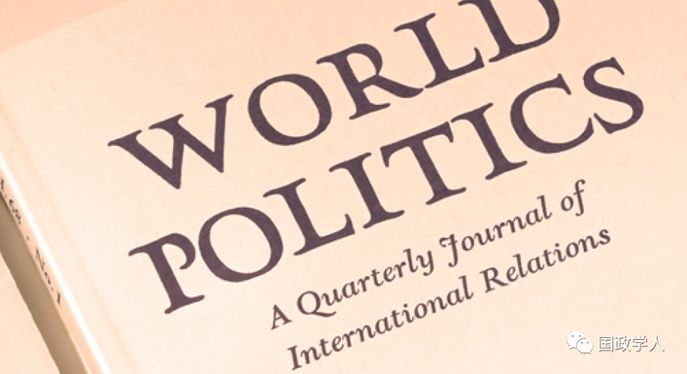
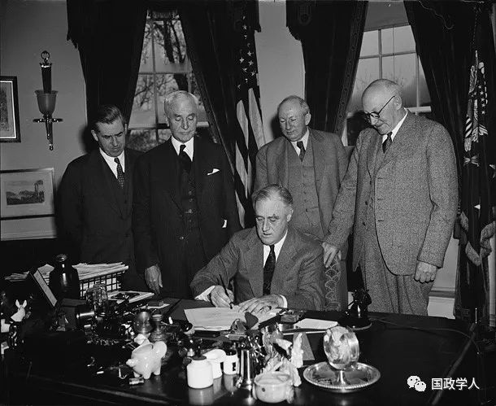
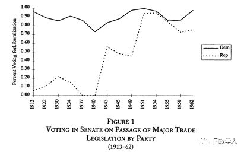
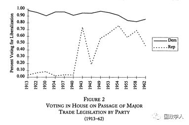

收录于合集

简 介
【作者】 Michael A. Bailey, 斯坦福大学政治学博士，现为乔治城大学政府系和麦考特公共政策学院的教授，他的研究兴趣为美国政治与经济。 Judith Goldstein， 加州大学洛杉矶分校政治学博士，现为斯坦福大学政治学系主任，珍妮特·佩克讲席教授，她的研究兴趣为国际政治经济学，重点关注贸易政治。 Barry R. Weingast ，加州理工学院经济学博士，美国国家科学院院士和美国艺术与科学院院士。他曾于1996-2001年担任斯坦福大学政治学系主任，现为斯坦福大学政治学系教授以及胡佛研究所高级研究员。
【编译】 施 榕
【来源】 Bailey, M. A., & Weingast, G. B. R. .(1997). The institutional roots of American trade policy: politics, coalitions, and international trade. World Politics, 49 (3), 309-338.
【期刊】 《世界政治》（World Politics）是一份同行评议的学术季刊，内容涵盖政治学和国际关系各个领域，由剑桥大学出版社代表普林斯顿国际和区域研究所出版。成立于1948年，主编是德博拉·亚沙尔（普林斯顿大学）。根据期刊引文报告，2017年影响因子为3.025，在86本“国际关系”类期刊中排名第6，在165本“政治学”类期刊中排名第11。

美国对外贸易政策的 “1934 年体制 ” 是如何形成的？
The Institutional Roots of American Trade Policy: Politics, Coalitions, and International Trade
图片来源：
https://michaelbailey.georgetown.domains/wp- content/uploads/2018/05/MichaelBailey-1.jpg
https://politicalscience.stanford.edu/sites/g/files/sbiybj12026/f/goldstein2.jpg
{kind=link}
https://mcnollgast.stanford.edu
译 者 按
1934年之前，美国奉行贸易保护主义政策，同时贸易政策也是美国两大政党的主要分歧之一。然而，1934年互惠贸易协定法（Reciprocal Trade Agreements Acts, 简称RTAA）改变了贸易政策制定的方式，创造了美国对外贸易政策史上著名的“ 1934 年体制 ”，使得贸易问题不受国内党派政治的影响，开启了美国的贸易自由化进程， 为美国之后领导世界市场的自由贸易奠定了基础 。然而，自20世纪80年代以来，“1934年体制”不断面临挑战与调整。如今，特朗普政府正重创这一体制，其单边主义行为极大地损害了美国多年来在自由贸易上的领导地位。在此背景下，回顾美国“1934年体制”形成的历史，将有助于我们了解和把握未来美国对外贸易政策的走向。
内容提要
在 20 世纪中期，贸易自由化在美国并非不可避免或不可逆转，美国的政治结构在当时仍然容易受到贸易保护主义的影响，但是却在之后半个多世纪内依然实行自由贸易政策，那么 RTAA 及其所代表的美国贸易政策自由化转向是如何发生的？其影响又如何？ 对此，本文认为是 RTAA 的制度创新 维系了美国的自由贸易政策，并且为该制度创新发生的时机、发生的形式和效用提供了解释。本文的论点分为2个部分。第一部分解释了RTAA的2个主要变化： （ 1 ）强制的互惠，而不是单边的关税减免；（ 2 ）贸易协定从法律层面上只需要国会多数而非三分之二同意即可获得通过。 第二部分则强调了RTAA的制度创新如何使美国贸易政策转向了自由化。 RTAA 在美国对外贸易政策史上的重要性在于它为自由贸易创造了政治支持，使其不受国内党派政治的影响。
本文主要分为三个部分， 第一部分是经验性观察， 即作者观察到美国两党在贸易问题上党派纷争的逐渐消失并逐渐形成了一个支持自由贸易的联盟，且国会在有其他选择的情况下依然把制定关税的权力移交给了总统，这一现象在美国长期实行贸易保护主义政策以及国会对贸易政策的持续性把控下，显得令人困惑。作者对几个可能的解释进行了驳斥。 在第二部分作者解释了 RTAA 诞生的政治背景，以及政治因素是如何改变了贸易政策的机制环境。 作者为国会议员、总统和外国政府在贸易问题上的互动提供了一个分析模型。 第三部分考察了 RTAA 的影响，以及它的制度结构如何改变了贸易政策的政治环境。 具体而言，就是RTAA不仅使得低关税政策具有可持续性，同时也凭借它对扩大出口的影响改变了国会在贸易政策上的偏好。

1934年3月20日，在赫尔起草，罗斯福的支持下，RTAA由美国国会批准通过。（图片来源：美国贸易代表办公室，USTR）
文章导读
**1
**
两党对贸易政策的支持


如图 1 、 2 所示，作者首先观察到在 20 世纪早期，美国两党在贸易政策上的分歧严重，但是到 1950 年之后分歧却基本消失，国会内民主党和共和党在贸易政策上的投票倾向趋于一致，同时在 RTAA 中国会把同外国政府进行贸易谈判的权力授予了美国总统。 对于后一种变化，存在两种解释。 第一种解释是国会认为有关贸易谈判的工作太过于繁重，所以将制定关税的权力授予了总统 。但是作者驳斥了这一说法，指出国会完全有其他的选择来减轻自身的工作量，比如建立新的委员会等。 第二种解释是，国会吸取了由《霍莱 — 斯穆特关税法 》 **** (Hawley—Smoot Tariff Act) **** 带来的历史教训，认为自身不具备通过一个理性的关税政策的能力，因为国会议员会受到来自生产者利益集团的影响，因此国会想将政治压力转嫁到总统身上 。作者同样对此观点进行了反驳，理由如下：（1）如果国会真的以维护公共利益之名来对抗来自单边的政治压力，那么人们应该可以期待国会在其他议题上也保持中立。然而实际上在贸易领域，多数情况下国会依然代表着生产者的利益。（2）1930年《霍莱- 斯穆特关税法》签订后出现的一系列问题并不能证明国会没有能力控制对外贸易。国会可以通过重组来制定更好的政策，就如同国会在1894年、1909年和1913年进行的重组一样，当参议院拒绝批准对1930年关税法案的众多修订案时，1934年国会也进行了重组。（3）如果国会确实从《霍莱- 斯穆特关税法》中吸取了教训，那么可以预计当时投票支持该关税法案的国会议员将会投票支持RTAA，然而从国会的投票情况来看，国会并未吸取教训，两党的投票行为依旧出现了明显的分化。共和党支持《霍莱- 斯穆特关税法》，民主党则支持RTAA。除此之外，即使国会将制定关税的权力授予总统，它依然在关税政策中发挥重要作用。
**2
**
RTAA产生的政治根源
虽然民主党比共和党更倾向于降低关税， 但民主党内部对是否要降低关税存在分歧 。代表蓝领阶级和移民劳动力的民主党员反对降低关税，并且随着这一派民主党员人数的增长，在1930年《霍莱- 斯穆特关税法》的讨论中，许多民主党员并未对高关税持反对意见。随之而来的经济大萧条也未能提高民主党降低关税的诉求。 在这一时期，单方面降低美国的关税会被视为政治上的冒险 。虽然罗斯福在1932年的竞选中严厉批评了胡佛的关税政策，但是他本人并不是一个坚定的自由贸易者，更像是一个贸易保护主义者。罗斯福的幕僚们也批评竞争对手想要单边减免关税的提议。即使在罗斯福竞选成功之后，关税的相互减免也是一个在政治上十分敏感的话题，罗斯福政府内的许多官员也对实行贸易自由化并不感兴趣，他们仍然倾向于从国内的视角来看待美国的问题，并寻求国内的解决之道。
因此罗斯福上台之后的民主党在推行降低关税政策上面临着2个主要的困境。一是在原有的制度框架下，单方面降低美国的关税可能不会赢得支持，因此要履行罗斯福总统关于关税改革的承诺就要另辟蹊径。二是在当时来看，民主党的竞选前景十分不确定。毕竟在此之前的70年里，共和党都在国家选举中占据主导性地位，如果不是经济危机的发生，它仍有可能赢得当时的总统选举。鉴于这种不确定性，民主党想要增加自己政策的持久度确保即使是共和党执政，也不会推翻自己的政策。 这些促使民主党对关税政策法案的制度进行了创新，最关键的创新是在 1934 年 RTAA 中将美国关税的自由化与外国关税的削减捆绑在一起，并且美国总统享有对外贸易谈判的权力，在双边基础上达成的贸易协定从法律层面上只需要国会的简单多数而非三分之二绝对多数的同意即可通过 。以上制度创新有助于实现两个目的：一是这种降低关税的形式有助于争取国会大多数的支持；二是授权总统来进行这种“捆绑式”的贸易谈判增加了共和党人试图提高关税的成本，在RTAA的框架下，任何微小的调整都可能影响其他贸易协定并损害美国的出口利益。随后，作者为国会议员、总统和外国政府在贸易问题上的互动提供了一个分析模型，表明RTAA法案能让民主党在降低关税的问题上赢得国内政治支持并在一定程度上与共和党形成政治同盟，并且在RTAA的机制框架下，即使执政党发生了更替，关税政策也具有稳定性和持久性。
2019年2月5日，美国总统特朗普发表国情咨文，要求国会批准一项名为“美国互惠贸易法案”的法案。（图片来源：Win McNamee/Getty Images）
**3
**
RTAA对美国的长期影响
作者认为，RTAA的重要性不仅仅在于创造了一个短期关税改革的机制。更为重要的是，它建立起了一个自我增强的模式，不断让美国倒向降低关税的政策，这主要是因为在RTAA的框架下，美国贸易的急速增长改变了国会和外国行为体的政治偏好，让它们将关注点更多地放在打开外国市场上。在此基础上，作者试图回答他们在第一部分提出的问题，即为何美国两党对于贸易政策的分歧在1950年后基本消失。作者推断是因为在RTAA框架下，具有竞争力的美国产品被大量出口到国外市场，扩大了出口工业的规模和数量，提高了利润，从而弥补了进口国外产品所带来的竞争压力。低关税政策促进了国内各个地区的出口，改变了各选区选民的利益偏好，进而影响了各选区代表在国会内部的投票倾向，两党在美国贸易政策上的立场分歧也逐渐被弥合。为了验证上述猜想，作者通过概率单位模型（probit model）估算了出口的变化对1953年和1962年国会内部支持自由贸易投票行为的影响，模型的结果验证了作者的推断。
**5
** ****总 结
综上，1934年美国贸易政策的转向是受国内政治、国内机制和国际经济等多种因素的影响。具体而言，国内政治引发了贸易领域相关机制的创新，机制创新又推动了世界贸易的增长，世界贸易的增长反过来改变了美国国会和外国行为体的偏好，使它们将关注点放在打开国外市场上。这一偏好的变化扩大了美国国会内部支持自由贸易政策的政治联盟，使贸易问题避免受到国内党派政治的影响，以此推动美国贸易自由化不断向前发展。
_ ** _ 本文由国政学人微信平台独家编译首发**
更多阅读
【重磅速递】约瑟夫·奈：美国霸权的兴衰：从威尔逊到特朗普 | 国政学人
【重磅推荐】巴里·布赞：英国学派视角下的中国崛起 | 国政学人
【重磅速递】米尔斯海默：注定失败：自由主义国际秩序的兴衰 | 国政学人
【国际组织】IO杂志：联合国维和行动的武力运用问题研究 | 国政学人
【国际秩序】为什么自由主义国际秩序理念将美国外交政策引入歧途？| 国政学人
【关系理论】“关系”：世界政治关系理论的中国话语 | 国政学人
【百年国关】历史在国际社会中的应用：从巴黎和会到现在 | 国政学人
【英国学派】张勇进：中国与全球国际社会中的自由主义等级制：实力与对规范变迁的协商 | 国政学人